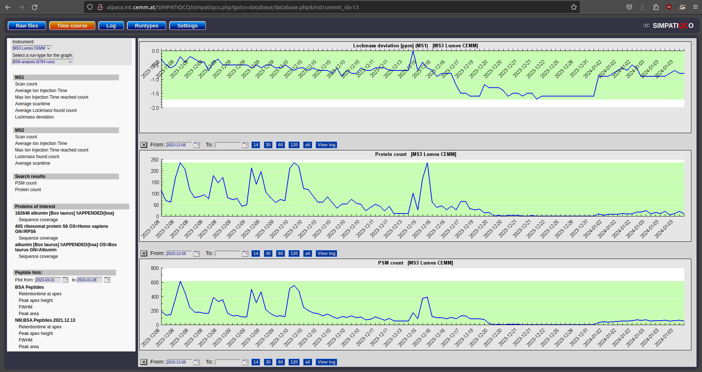
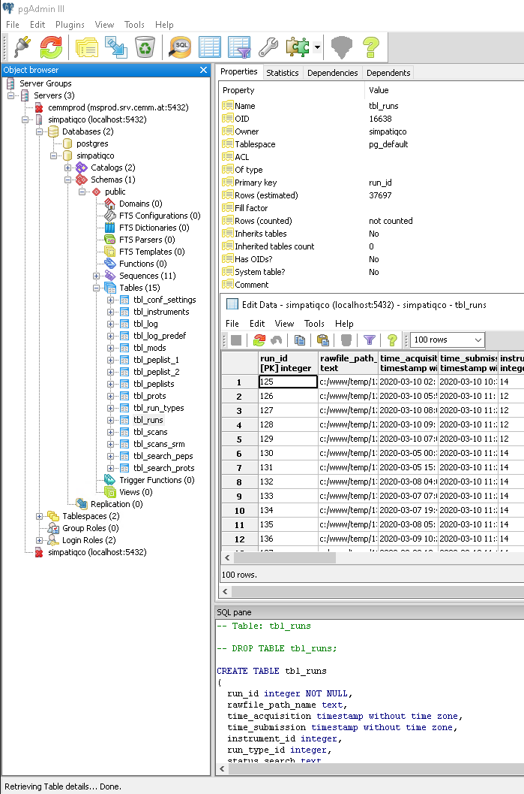

SimpatiQCo is a software suite running on a local server for a Mass Spectrometry service facility.
Through a web interface, SimpatiQCo allows facility staff to upload raw or wiff files stemming from a Thermo mass spectrometer or an ABI Sciex mass spectrometer respectively. The software will then analyse the raw file, extract data (ion injection times, scan times,…) and will also do a Mascot search.
I set up an in house Mascot-server and later linked a collaborative Mascot-server from Medical University of Vienna to work with local SimpatiQCo installation. All data from the raw file and Mascot search results are then stored in a Postgres database, which is accessible through the web interface to view several values and graphs for the current run, but also to view long-term data over a time course.
It is therefore easy to plot e.g. PSMs vs. retention time, to plot the lock mass deviation over a whole run, or to create a plot viewing the sequence coverage of a certain protein over a long time period.
I set up SimpatiQCo software at the Molecular Discovery Platform (MDP) of CeMM under a Virtual Machine running Windows 10 OS (Education Licence, Version 22H2, OS Build 19045.3693)
 